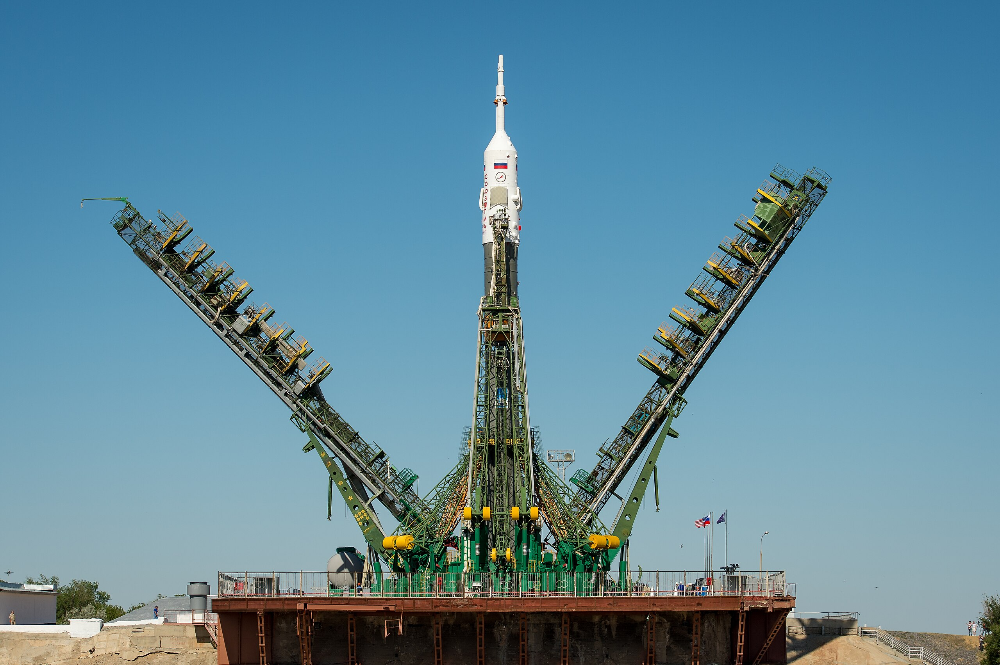

Легендарный «Союз»
История главного российского космического корабля началась в 1960-е годы. В ОКБ-1 (конструкторском бюро Сергея Королёва) искали замену «Востоку» — его сферический спускаемый аппарат не подходил для перспективных лунных миссий: при возвращении с Луны перегрузки оказались бы смертельными — вес человека вырос бы в 20 раз. Инженеры выбрали форму «фара» — такое днище обладало небольшим аэродинамическим качеством и позволяло снизить перегрузки до приемлемых 3–8-кратных. Точность посадки выросла с 300–400 км до 5–10 км.
23 сентября 1963 года Сергей Королёв утвердил проект комплекса «Союз». Первый испытательный пуск нового корабля (7К-ОК) состоялся 28 ноября 1966 года под названием «Космос-133». Полёт был не совсем удачным из-за режима секретности, но конструктивные решения подтвердили свою перспективность.
Доставшийся в наследство от СССР, «Союз» не остался неизменным. Уже в российский период появились новые модификации, значительно отличавшиеся от первых версий. О том, как менялся корабль, вспоминал лётчик-космонавт, летавший на четырёх разных версиях:

Внешне «Союзы» действительно очень похожи, но внутренние системы претерпели серьёзную модернизацию. На «Союзе ТМ» появилась аппаратура сближения «Курс», новые двигатели. На «ТМА» разработали новый пульт «Нептун МЭ» с цифровым интерфейсом, доработали систему приземления. Точность посадки довели до 8 км при заданных 28.
Следующая версия — «ТМА-М» — получила цифровую систему управления, что позволило сократить дорогу к МКС с 48 часов до 4 витков. А в 2011 году начались полёты «Союза МС», который стал самым современным вариантом легендарного корабля.
«Союз МС» сегодня остаётся единственным средством доставки экипажей на МКС и считается одним из самых надёжных кораблей в истории.
Будущее: корабль «Орёл»
Мысль о замене «Союзу» возникла ещё в 1985 году с проектом «Заря», но из-за сокращения финансирования работы свернули. В 2000-е годы появился проект «Клипер», который тоже не пошёл в серию.

В 2009 году началась разработка нового корабля — тогда его называли ПТК НП (пилотируемый транспортный корабль нового поколения). Позже он получил имя «Федерация», а в 2019 году был переименован в «Орёл».
Главный конструктор корабля рассказывал о деталях проекта:
«Корабль разрабатывается для полётов не только на околоземную орбиту, но и к Луне. Штатный экипаж — 4 человека, при необходимости можно установить два дополнительных кресла. Масса возвращаемого аппарата при околоземных полётах — 16,5 тонны, а в лунном варианте — 22 тонны. Мягкое касание Земли обеспечат четыре опоры и парашютно-реактивная система».
По словам Хамица, «Орёл» сможет находиться в составе станции до года, а в автономном полёте — до 30 суток. В нём появится санузел, объём герметичного отсека составит 18 м³. Важное отличие от «Союза» — многоразовость: спускаемый аппарат рассчитан на 10 полётов.
Первый беспилотный запуск «Орла» запланирован на 2027 год с космодрома Восточный, пилотируемый — на 2028–2029 годы. Выводить его будет ракета «Ангара-А5».
Рассуждая о будущем, Кононенко заметил:
«Конечно, и у „Союза“ придёт время. Нет такой техники, которую можно создать однажды и использовать до бесконечности. Но „хоронить“ его при жизни точно не стоит».